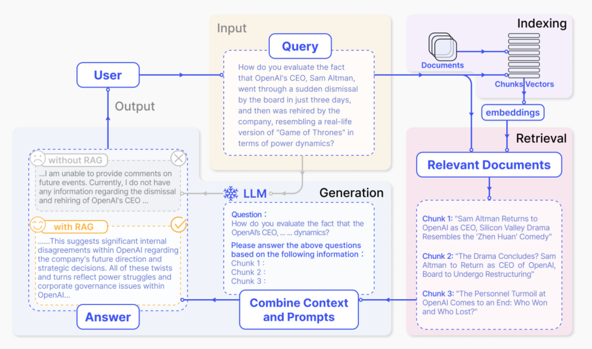
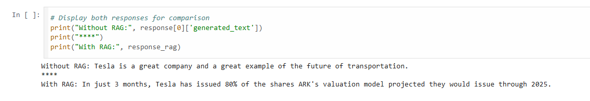

AI-Driven RAG Financial Chatbot
Problem Statement & Objective
Designing a Retrieval-Augmented Generation (RAG) financial chatbot to summarize public opinions on financial topics[cite: 3].
The objective was to build a system capable of parsing and accurately retrieving context from Reddit discussions to help users understand market sentiment, while strictly preventing the AI from offering personalized financial advice[cite: 3, 4].

Building the indexing system using pandas and SentenceTransformers
Architecture & Tech Stack
- Language: Python
- Models Evaluated: GPT-2, Llama-2-7B, Flan-T5 Base, Flan-T5 Large[cite: 3]
- Final LLM: Flan-T5 Large (780M Parameters)[cite: 3]
- Datasets: Hugging Face
emilpartow/reddit_comments_sp500[cite: 4]

Comparing LLM outputs with and without context retrieval
Engineering Challenges & Solutions
- Model Benchmarking: Evaluated four LLMs for summarization efficacy. Selected Flan-T5 Large as it delivered the strongest summarization performance, whereas Llama-2-7B suffered from prompt-echoing and GPT-2 was prone to hallucinations[cite: 3].
- Context & Token Optimization: Prevented token overflow errors by migrating from a post-based dataset to a comment-based dataset, dynamically concatenating post titles with comments[cite: 4]. Tuned the retrieval
k-valuedown to 3 to optimize context window limits[cite: 4]. - Guardrails & Fallback Logic: Engineered system prompts with strict guardrails to prevent the generation of financial advice[cite: 4]. Implemented a baseline cosine similarity threshold of 0.4; queries retrieving context below this score automatically trigger a generic fallback response to prevent hallucinated answers[cite: 6].
- Hyperparameter Tuning: Calibrated the generation pipeline to eliminate literal repetition by enabling sampling, setting temperature to 0.7, top-p to 0.9, and applying a repetition penalty of 1.3[cite: 5].